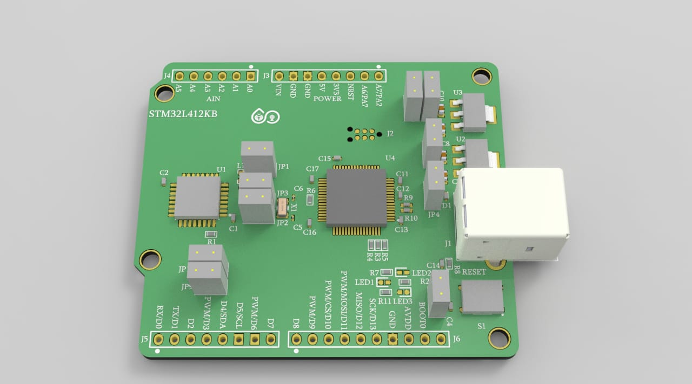

nRF52 DK
Versatile Development kit for Bluetooth LE and Blueooth mesh 2.4 GHz applications
The STM32 board provides an affordable and flexible way for users to try out new concepts and build prototypes by choosing from the various combinations of performance and power consumption features, provided by the STM32 microcontroller. The Arduino Nano V3 connectivity support allows the easy expansion of the functionality of the STM32 open development platform with a wide choice of specialized shields. The STM32 Nucleo-32 board does not require any separate probe as it integrates the ST-LINK debugger/programmer. The STM32 Nucleo-32 board comes with the STM32 comprehensive free software libraries and examples available with the STM32Cube MCU Package.

Applications
- Internet of Things(IoT)
- Home of automation
- Sensor networks
- Retails
- Personal Area Networks
Key Features
- STM32 microcontroller in 32-pin package
- 1 user LED
- 1 reset push-button
- Borad-connectors:-
Arduino™ Nano V3 expansion connector Micro-AB USB connector for the ST-LINK
- Flexible power-supply options:- ST-LINK, USB VBUS or external sources
- On-board ST-LINK debugger/programmer with USB re-enumeration capability:- mass storage, Virtual COM port and debug port